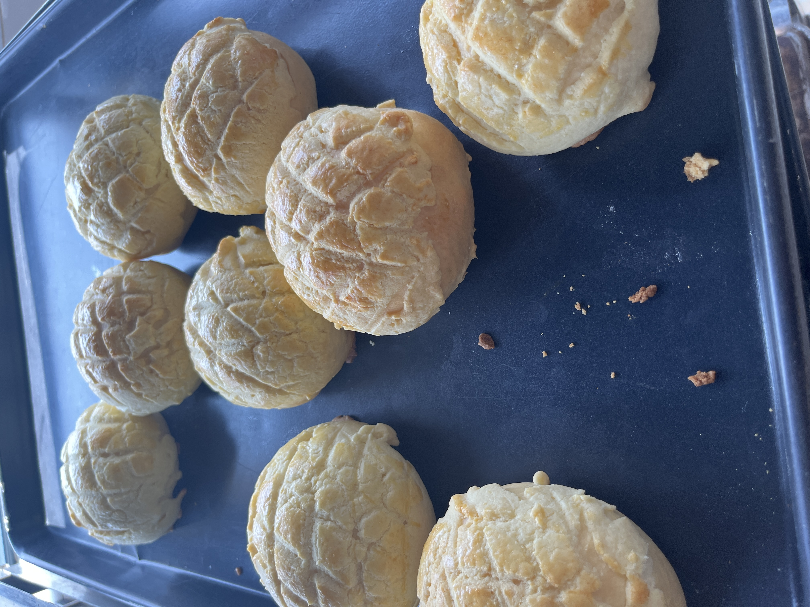
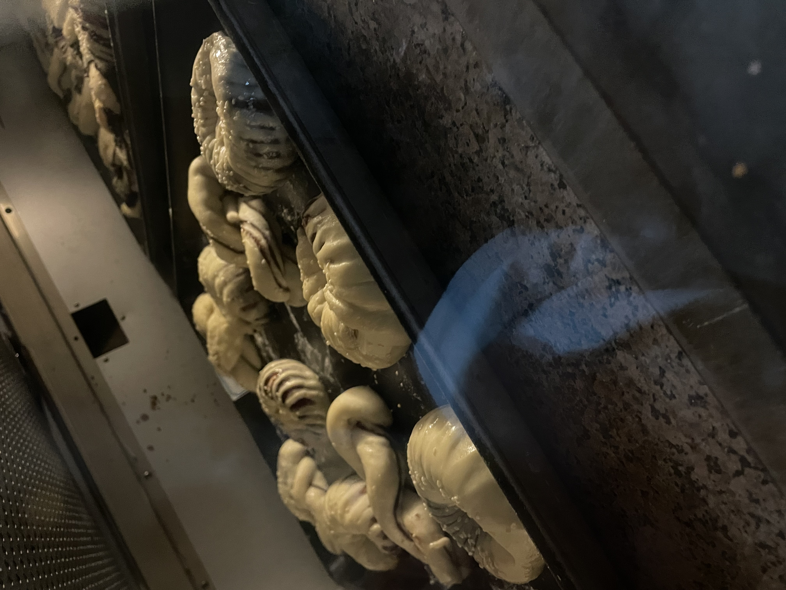
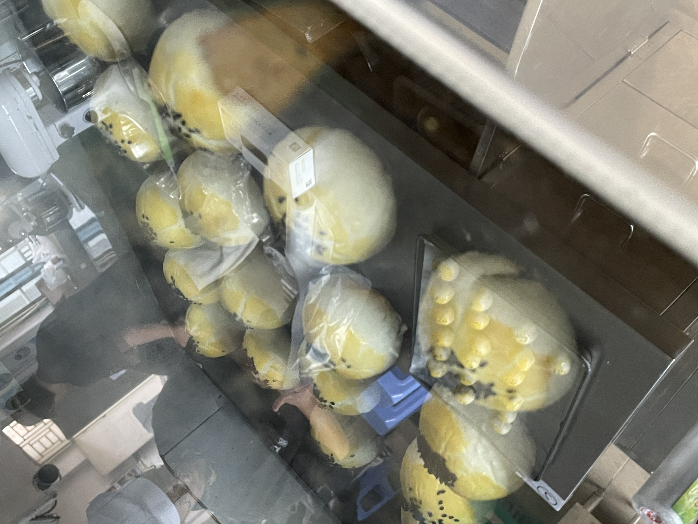
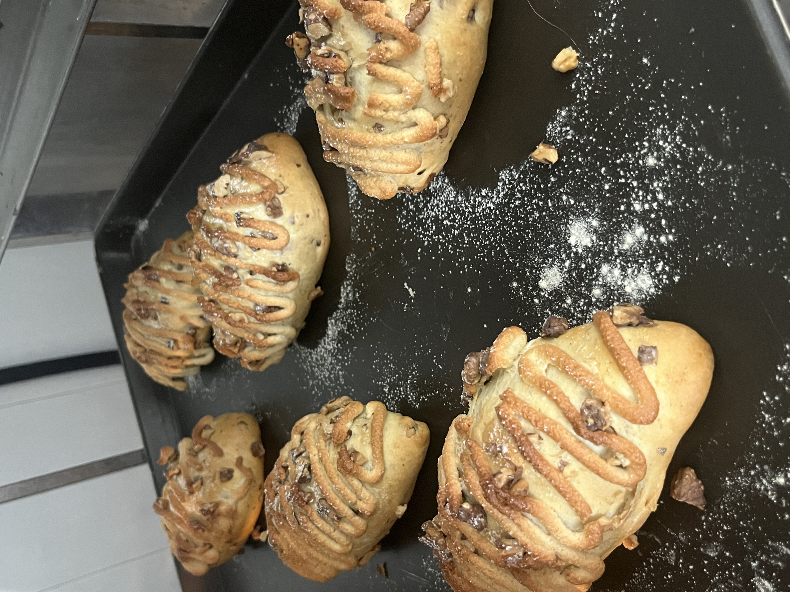
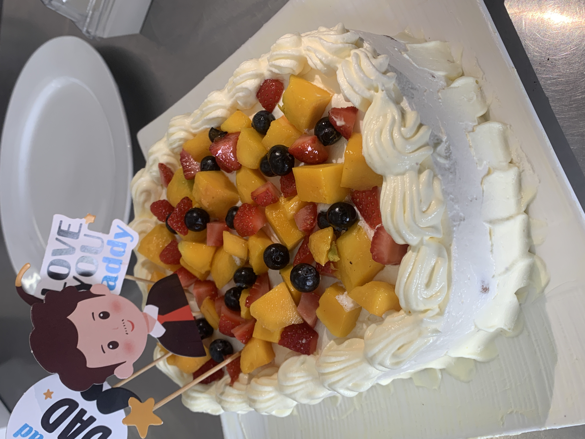

甜品烘焙
甜蜜时光
用双手创造甜蜜，用温度烘焙幸福。每一份甜品，都承载着对生活的热爱。
烘焙的魅力
烘焙是一门艺术，也是一种生活态度。从选材到成品，每一步都需要耐心和用心。 我喜欢在周末的午后，烤一份香甜的蛋糕或饼干，让整个房间弥漫着幸福的香气。
我的烘焙作品

肉松小贝
做法：将戚风蛋糕胚切成圆形小块，中间涂抹沙拉酱粘合，表面再涂满沙拉酱，最后裹上满满的肉松。口感松软咸香，肉松的酥脆与蛋糕的绵密完美融合，是网红甜品中的经典之作。

泡芙
做法：将黄油、水、盐煮沸后加入低筋面粉搅拌成团，待凉后分次加入鸡蛋液搅拌至顺滑。挤入烤盘烘烤至金黄膨胀，冷却后从底部挤入香草奶油馅或冰淇淋。外壳酥脆，内馅冰凉绵密，一口咬下满满的幸福感。

菠萝包
做法：面团发酵后分成小剂子，表面覆盖一层由黄油、糖粉、蛋液和低筋面粉制成的酥皮，用刀划出网格纹路。烘烤后酥皮呈现金黄色菠萝纹路，外酥内软，是香港茶餐厅的经典点心，夹上一片黄油更是绝配。

豆沙甜甜圈
做法：将发酵好的面团分成小剂子，包入红豆沙馅，搓圆后压扁，中间用手指戳洞形成圆环状。放入油锅小火炸至两面金黄，捞出沥干油分，趁热裹上细砂糖。外酥内软，豆沙香甜，是老少皆宜的传统美味。

椰蓉小面包
做法：面团发酵后擀开，铺上由椰蓉、黄油、糖和蛋液混合而成的馅料，卷起切成小段，放入模具二次发酵。表面刷蛋液后烘烤至金黄，椰香四溢，每一口都能吃到香甜的椰蓉馅，是早餐和下午茶的绝佳选择。

蛋黄酥
做法：咸蛋黄喷白酒烤至出油，用红豆沙包裹成团。分别制作水油皮和油酥皮，将油酥包入水油皮中擀卷，重复两次后包入馅料。表面刷蛋黄液，撒黑芝麻，烘烤至金黄酥香。层次分明，咸甜交织，是中式点心中的经典之作。

核桃布里奥斯面包
做法：将高筋面粉、酵母、糖、盐、牛奶和黄油揉成光滑面团，发酵至两倍大。面团分成小剂子，表面刷蛋液，粘满核桃仁。二次发酵后烘烤至金黄，出炉后刷上蜂蜜黄油液。外酥内软，核桃香脆，蜂蜜香甜，是欧式面包中的经典之作。

蛋糕
做法：将鸡蛋和细砂糖打发至浓稠发白，分次筛入低筋面粉轻轻翻拌均匀，再加入融化的黄油和牛奶拌匀。倒入模具震出气泡，放入预热好的烤箱烘烤至表面金黄、牙签插入无粘连。口感绵密细腻，蛋香浓郁，是庆祝生日和节日的经典甜品。
蛋糕
从戚风蛋糕到奶油蛋糕，每一款都是用心配制。柔软的蛋糕体配上细腻的奶油，甜蜜在舌尖绽放。
饼干
黄油曲奇、巧克力饼干、蔓越莓饼干...每一块都酥脆可口，是下午茶的完美搭档。
面包
柔软的面包需要耐心的发酵和揉面，当烤箱里飘出阵阵麦香，一切都变得值得。